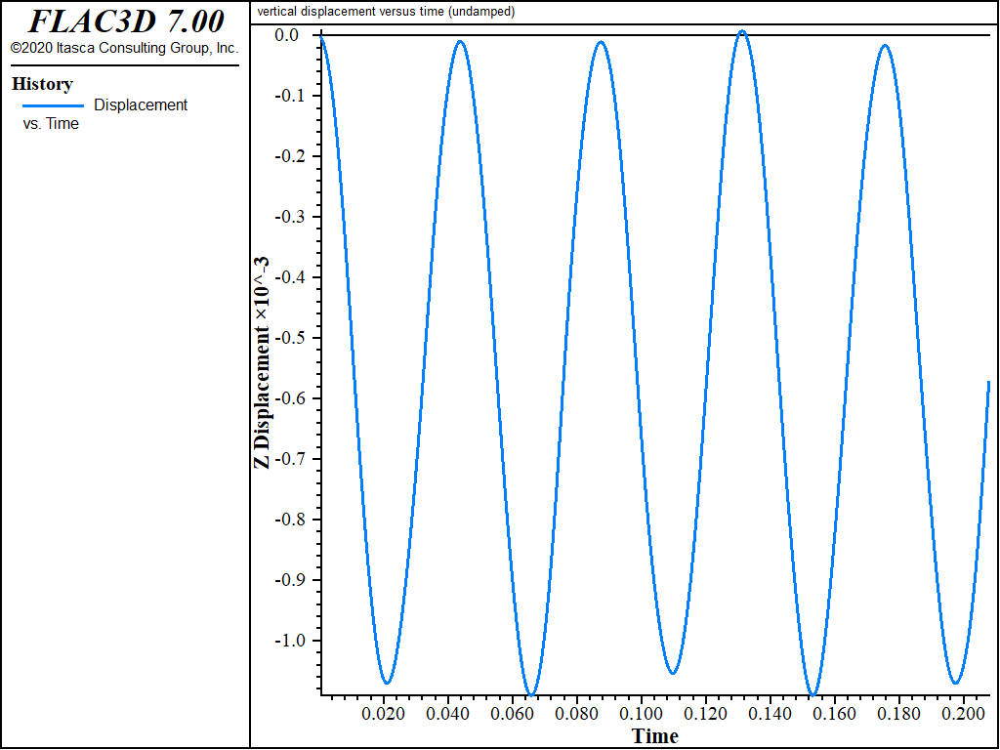
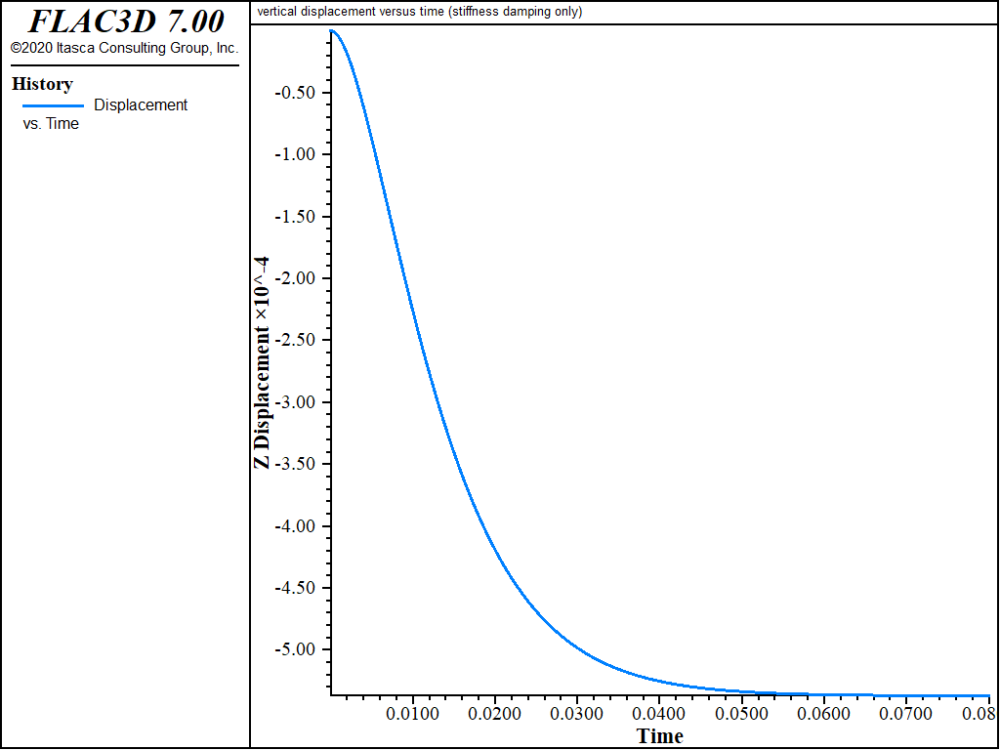
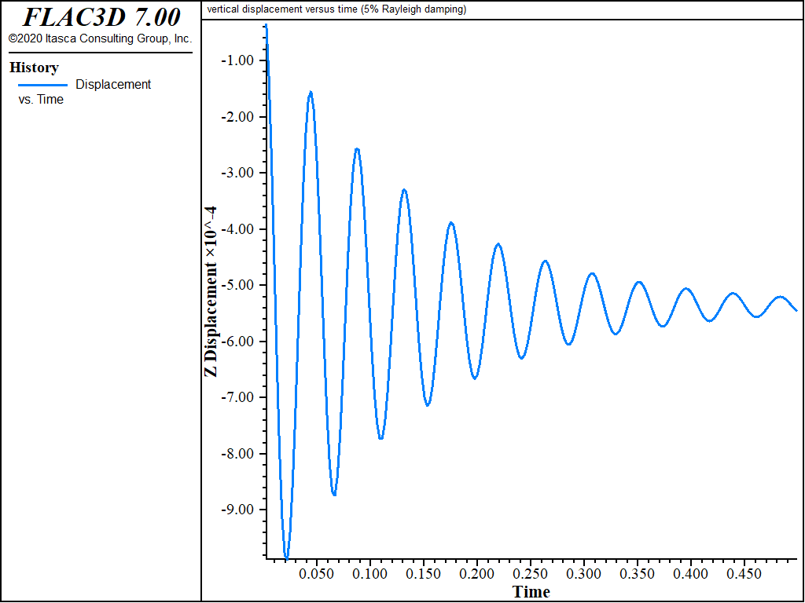
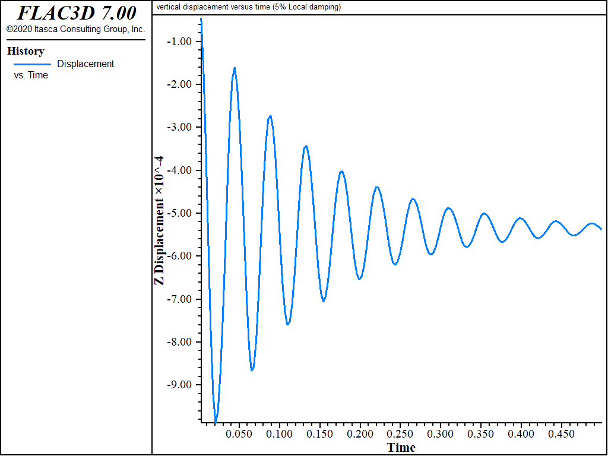

重力作用下的块体——考察阻尼选项
注意
要在 FLAC3D 中查看此项目，请使用菜单命令 。选择“Dynamic/MechanicalDamping”并选择“MechanicalDamping.f3prj”以加载。 所用主数据文件见本示例末尾（main data files）。其余数据文件可在项目中找到。
为演示 Rayleigh 阻尼和局部阻尼在 FLAC3D 中的工作方式， 可以比较若干阻尼情况的计算结果。 该示例由一个正方形网格组成，突然施加重力。 工况为：
- 无阻尼；
- Rayleigh 阻尼（质量阻尼和刚度阻尼兼有）；
- 仅 Rayleigh 质量阻尼；
- 仅 Rayleigh 刚度阻尼；
- 5% Rayleigh 阻尼；以及
- 局部阻尼。
在无阻尼的工况 (a) 中，观察到约 25 Hz 的自振频率 （见 图 1（Figure 1））。 如果满足以下条件，则应使用 Rayleigh 阻尼（Rayleigh damping） 使问题达到临界阻尼： 1) 指定临界阻尼比 \(\xi_{\min}\) 为 1； 2) 指定自振频率 \(f_{\min}\) 为 25 Hz；且 3) 同时使用质量阻尼和刚度阻尼。


图 1：正方形网格突然施加重力时竖向位移随时间的变化（无阻尼）。
图 2（Figure 2） 中的结果表明问题达到临界阻尼。 如果只使用质量阻尼或刚度阻尼，则必须将 \(\xi_{\min}\) 加倍才能获得临界阻尼 （因为每个分量对总阻尼的贡献为一半）。 图 3（Figure 3） 和 图 4（Figure 4） 再次表明系统达到临界阻尼。
请注意，三个阻尼模拟的时步不同。 这是刚度比例阻尼影响的结果， 如Rayleigh 阻尼（Rayleigh Damping）中所述。



图 4：正方形网格突然施加重力时竖向位移随时间的变化（仅刚度阻尼）。
局部阻尼具有一些特性，使其在动力模拟中颇具吸引力 （见 动力模拟中的局部阻尼（Local Damping for Dynamic Simulations））。 为便于比较，采用 5% Rayleigh 阻尼运行该示例， 并与使用经计算与之匹配的局部阻尼系数的结果进行比较。 位移时程见 图 5（Figures 5） 和 6。 两者结果相当接近。


图 5：位移时程——5% Rayleigh 阻尼。


图 6：位移时程——5% Rayleigh 阻尼。
局部阻尼不推荐用于地震模拟， 因为这类阻尼无法恰当地完全表示多次循环加载的能量损失。
数据文件
;---------------------------------------------------------------------
; 重力作用下的块体——无阻尼及 3 种临界阻尼工况
;---------------------------------------------------------------------
model new
model large-strain off
fish automatic-create off
model configure dynamic
; 创建网格单元
zone create brick size 3,3,3
; 指定材料模型和参数
zone cmodel assign elastic
zone property bulk 1e8 shear 0.3e8 density 1000
; 初始条件
model gravity 10
; 边界条件
zone gridpoint fix velocity-z range position-z 0
; 历史
history interval 1
zone history name='zdisp' displacement-z position 3.0,2.0,3.0
model history name='time' dynamic time-total
; 保存共用的初始状态
model save 'Initial'
; 运行无阻尼状态算例
model restore 'Initial'
model title "vertical displacement versus time (undamped)"
model cycle 350
model save 'Undamped'
; 瑞利质量与刚度阻尼
model restore 'Initial'
model title "vertical displacement versus time (mass & stiffness damping)"
zone dynamic damping rayleigh 1 22.8
model solve time-total=0.08
model save 'RayleighMassStiff'
; 仅瑞利质量阻尼
model restore 'Initial'
model title "vertical displacement versus time (mass damping only)"
zone dynamic damping rayleigh 2 22.8 mass
model solve time-total=0.08
model save 'RayleighMass'
; 仅瑞利刚度阻尼
model restore 'Initial'
model title "vertical displacement versus time (stiffness damping only)"
zone dynamic damping rayleigh 2 22.8 stiffness
model solve time-total=0.08
model save 'RayleighStiff'
; 5% 瑞利阻尼
model restore 'Initial'
model title "vertical displacement versus time (5% Rayleigh damping)"
zone dynamic damping rayleigh 0.05 22.8
history interval=5
model solve time-total=0.5
model save 'Rayleigh05'
; 局部阻尼
model restore 'Initial'
model title "vertical displacement versus time (5% Local damping)"
zone dynamic damping local 0.1571 ; = math.pi * 0.05
history interval=5
model solve time-total=0.5
model save 'Local'
⇐ Hydrodynamic Pressure Acting on a Dam | One-Zone Sample Loaded in Shear with Strain Rate Reversal ⇒
| 这些内容对您有帮助吗？… 版权与免责声明 | FLAC3D © 2019, Itasca | 原文更新于 2020 年 10 月 8 日 |